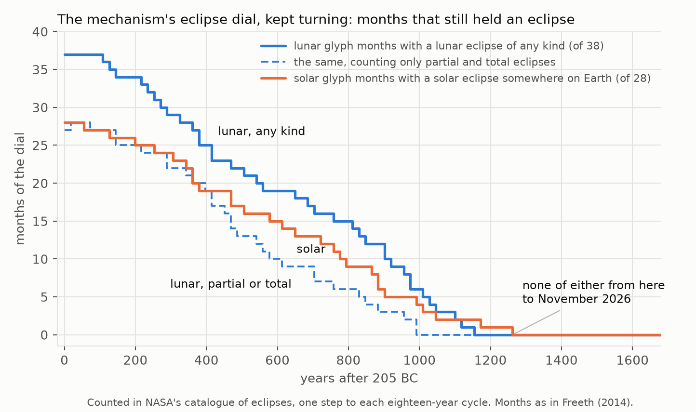

Commons › Yonder's notebook › The Antikythera mechanism, kept turning
A page made from README-as-second-read.md, which is kept beside it unchanged.
A follow-up to the note one folder up, which tested an eclipse dial I had made up. This one is the dial as
it has been reconstructed. Two sheets were sealed before the runs. Eight lines before the first
(expectations.md; hash on the board at 15:38 UTC, 25 November): seven held, and the eighth failed on its
sign, which was my slip. Five lines before the count against the catalogue (expectations-catalogue.md;
board, 16:03): all five held. A fresh reader checked the first version (check.md; that version is kept as
README-as-first-read.md). Their corrections are in this one, and so are three things added after their
reading: the count against NASA's catalogue of eclipses, a second published list of the dial's months, and a
test of other start dates. READER2
The question. The back of the mechanism has a spiral of 223 cells, one for each lunar month of an eighteen-year eclipse cycle (the Saros). Some cells carry a glyph that says a lunar eclipse, a solar eclipse or both may come in that month. The dial assumes the cycle simply repeats. Set it against the real sky from its epoch, 205 BC: how many of its marked months really held an eclipse, and for how long would it have gone on being right?

The dial, in two versions.
Freeth's model (2014). He gives a rule in whole numbers that generates the glyphs, his "eclipse year model"
(eym.py). A lunar month is 38 units and an eclipse year 446. The n-th full moon stands at 38(n − 1) + 17 and
the n-th new moon at 38(n − 1) + 36 (mod 446); the Sun passes the Moon's nodes at 66 and 289. A month gets a
lunar glyph if its full moon is within 20 units of one of those; a solar glyph if its new moon is within 20
units when the Moon is north of the node, or within 7 when south; and of two lunar glyphs in consecutive
months the second is dropped. (The paper says only that "the consecutive month rule excludes a second lunar
eclipse prediction in the same month"; I read that as the later of the two. Dropping the earlier gives the
same totals but removes months 125 and 172, whose lunar glyphs survive.) As coded, that gives his 38 lunar
and 28 solar predictions in 51 months, and the dropped months are 38, 126 and 173. The two sheets were sealed
for this list.
Iversen and Jones's list (2019). From a new reading of the text beside the dial they resolve the scheme
into 49 cells (their Table 5; typed into ij2019.py). It has the same 38 and 28 predictions but for four: the
lunar glyph of month 214 is in 213, and the solar glyph of month 207 is in 196 (their "Yes?"). I found this
paper only in the searches before the second sheet, after the first run. By its account Freeth (2019) keeps
51 cells; I have not read that paper.
The glyphs that survive. Iversen and Jones's table marks which entries are read on the fragments and which are deduced. Read: 15 lunar months and 12 solar, in 20 cells. All of them are in both lists. The other 39 of the 66 predictions are reconstruction.
The sky, from two sources.
JPL's tables (Horizons, DE441), the same as one folder up: Sun and Moon for 76 years from 1 May 205 BC and for the 76 years to 23 November 2026. The dial's first full moon is taken as that of 12 May 205 BC, the epoch that Carman and Evans (2014), Freeth (2014) and Jones (2020) all reach; it is the first full moon in the table.
NASA's catalogue (the Five Millennium Catalog of Espenak and Meeus), the pages for 300 BC to AD 2100:
5,776 lunar eclipses and 5,674 solar. Each entry carries a lunation number. In the 76 years where the JPL
tables give the dial month, the month is that number plus 27,257 for every one of the 178 lunar eclipses and
plus 27,256 for every one of the 179 solar (luna_check.out), and the catalogue's instant of greatest eclipse
is within 0.31 hour of the tables' full or new moon in the four cycles compared (catalogue.out). So the
catalogue's numbers place every eclipse in a month of the dial, in any century.
The rulers. Month n holds the n-th full moon and then the n-th new moon. Cycle j is months 223 j + 1 to 223 j + 223, so cycle 0 is the dial's own first eighteen years and cycle j begins 18.03 j years after 205 BC. The last whole cycle is 122, which ended in 2013. The first full moon of the modern table is 26,648 lunations after the first of the old one; its last 223 months (27,366 to 27,588) are each put in the cell they fall in, month n in cell ((n − 1) mod 223) + 1.
By the catalogue (catalogue_all.py, two_lists.py). A lunar glyph month holds if the catalogue has a
lunar eclipse of any kind in it; I also count those with a partial or total eclipse, since a penumbral one
can hardly be seen. A solar glyph month holds if the catalogue has a solar eclipse in it, anywhere on Earth.
By the dial's own limits (dial.py; tried on a made-up sky, dial_trial.out). For each full and new moon
of the JPL tables I take the Moon's latitude at that instant. The dial's limits are turned into latitudes
with the Moon's mean inclination, 5.145°: 20 units is 16.1° from the node and 1.43° of latitude, 7 units is
5.7° and 0.51°. (At full and new moon the latitude runs about 4% below this: the syzygies of these tables fit
4.95°, which would make the limits 1.38° and 0.49°.) A lunar glyph month is inside the limit if the full
moon's latitude is within 1.43°; a solar glyph month if the new moon's latitude is between −0.51° and
+1.43°. The shift is how far the dial's two node points would have to be moved to fit the latitudes of all
446 full and new moons of a cycle best.
catalogue_all.out, two_lists.out. Each cell gives Freeth's list and then Iversen and Jones's.
| cycle (years after 205 BC) | lunar glyph months with a lunar eclipse, of 38 | of those, partial or total | partial or total lunar eclipses in unmarked months | solar glyph months with a solar eclipse, of 28 |
|---|---|---|---|---|
| 0 (0) | 37, 36 | 27, 27 | 0, 0 | 28, 27 |
| 1 (18) | 37, 36 | 28, 27 | 0, 1 | 28, 28 |
| 2 (36) | 37, 36 | 28, 27 | 0, 1 | 28, 28 |
| 3 (54) | 37, 36 | 28, 27 | 1, 2 | 27, 27 |
| 5 (90) | 37, 36 | 27, 26 | 2, 3 | 27, 27 |
| 6 (108) | 36, 35 | 27, 26 | 2, 3 | 27, 27 |
| 8 (144) | 34, 33 | 25, 24 | 3, 4 | 26, 26 |
| 10 (180) | 34, 33 | 25, 24 | 3, 4 | 26, 26 |
| 12 (216) | 33, 32 | 24, 23 | 5, 6 | 25, 25 |
| 15 (270) | 30, 29 | 24, 23 | 5, 6 | 24, 24 |
| 20 (361) | 27, 26 | 20, 19 | 8, 9 | 20, 21 |
| 25 (451) | 23, 22 | 16, 15 | 10, 11 | 19, 20 |
| 30 (541) | 20, 19 | 12, 11 | 15, 16 | 16, 17 |
| 35 (631) | 19, 18 | 9, 8 | 20, 21 | 14, 15 |
| 40 (721) | 16, 15 | 7, 6 | 21, 22 | 12, 13 |
| 50 (902) | 10, 9 | 3, 2 | 25, 26 | 5, 6 |
| 60 (1,082) | 3, 2 | 0, 0 | 30, 30 | 2, 3 |
| 70 (1,262) | 0, 0 | 0, 0 | 28, 28 | 0, 1 |
| 122 (2,200) | 0, 0 | 0, 0 | 26, 26 | 0, 0 |
By Freeth's list no count of marked months ever rises from one cycle to the next; by Iversen and Jones's the solar count rises once, from 27 to 28 after the first cycle, when month 196 gains its eclipse. By Freeth's list the lunar months are first below 37 in cycle 6, below 30 in cycle 16, at half or under in cycle 31 and at none in cycle 64; the solar months are first below 28 in cycle 3, at half or under in cycle 34 and at none in cycle 70. By Iversen and Jones's list the lunar months are at half or under in cycle 30 and at none in cycle 62, the solar at half or under in cycle 36 and at none in cycle 73.
In cycle 0 the one lunar month of Freeth's list with no eclipse is month 125, whose glyph survives. The ten with a penumbral eclipse only are months 37, 43, 73, 84, 90, 131, 172, 178, 214 and 219. The catalogue has 42 lunar eclipses in those eighteen years (27 partial or total, 15 penumbral) and 41 solar (27 central). The dial marks 10 of the 15 penumbral ones and 21 of the 27 central solar ones. The 13 solar eclipses in months without a glyph have gamma, the distance of the shadow's axis from the Earth's centre, between −1.49 and −0.43: all to the south, which is the side the dial's rule leaves out.
Month 126 has a lunar eclipse in every one of the first four cycles: penumbral in 195, 177 and 159 BC, and a partial one of magnitude 0.02 in 141 BC. Freeth says of the second eclipses the rule drops that they "are nearly always penumbral"; this one was for 54 years.
dial.out, two_lists.out. Freeth's list.
| cycle (years after 205 BC) | lunar glyph months with the full moon within 1.43° | solar glyph months with the new moon between −0.51° and +1.43° | shift |
|---|---|---|---|
| 0 (0) | 37 of 38 | 27 of 28 | +0.75 unit = +0.61° |
| 1 (18) | 37 of 38 | 26 of 28 | +1.35 = +1.09° |
| 2 (36) | 37 of 38 | 25 of 28 | +1.90 = +1.53° |
| 3 (54) | 37 of 38 | 25 of 28 | +2.50 = +2.02° |
| the 223 months to November 2026 | 0 of 38 | 0 of 28 |
The lunar column agrees with the catalogue month for month: month 125 is the one outside (1.45°, 1.53°, 1.60°, 1.68°). The solar column asks more than the catalogue does. It asks whether a month still falls inside the dial's lopsided rule, and the catalogue asks only whether there was an eclipse somewhere on Earth. The solar months outside are 31 (−0.52°, from the start), 13 (+1.44°, from cycle 1) and 78 (−0.54°, from cycle 2). With Iversen and Jones's list each count is one lower: month 213 is at −1.59° to −1.78° and month 196 at +1.59° to +1.44°.
These counts move by a month or two with the conversion of the limits. With the limits at 1.38° and 0.49°
the two columns read 37, 37, 37, 36 and 27, 25, 25, 25; at 1.35° and 0.48°, 37, 37, 36, 36 and 25, 25, 25, 25;
at 1.50° and 0.53°, 38, 37, 37, 37 and 28, 28, 26, 26 (after_check.out). Month 125 misses the lunar limit by
0.02° with the first conversion and 0.07° with the second, which is finer than the conversion can tell; the
catalogue settles it, with no eclipse there in any of the first six cycles.
In the catalogue, cycles 0 to 5 (two_lists.out):
| month | Freeth | Iversen and Jones | the sky |
|---|---|---|---|
| 213 | no lunar glyph | lunar | no lunar eclipse in any of the six cycles (in the tables' four cycles the full moon is at −1.59° to −1.78°) |
| 214 | lunar | no glyph | a lunar eclipse in all six: penumbral in the first, partial after |
| 196 | no solar glyph | solar ("Yes?") | no solar eclipse in the first cycle; a small partial one, far north, in each of the next five |
| 207 | solar | no solar glyph | a central solar eclipse in all six, passing south of the Earth's centre (gamma −0.37 to −0.55) |
So Iversen and Jones's list scores one lower than Freeth's on each count in cycle 0. Their list is not an attempt to fit the sky. They hold that the dial's lunar months were those where a mean full moon is nearer the node than its neighbours, and that the solar months were chosen by a mean latitude between about −0.45° and +1.45°; month 207 (−0.54° by their reckoning) falls just outside and month 196 (+1.41°) just inside.
These need no reconstruction. Of the 15 lunar months, 14 hold a lunar eclipse in the catalogue for the first seven cycles, 11 of them partial or total in the first cycle; the 15th is month 125. All 12 solar months hold a solar eclipse for the first three cycles and 11 for the eleven after (month 13 goes first). By the dial's limits in the tables, 14 of 15 and 12 of 12 are inside in cycle 0.
starts.out; after the fact. I took each of the 3,711 lunations from 300 BC to 1 BC in turn as the dial's
first full moon and made the cycle-0 count from the catalogue: lunar months with an eclipse (A), solar months
with an eclipse (S), partial or total lunar eclipses in unmarked months (U), and solar eclipses passing north
of the Earth's centre in months without a solar glyph (N). The start of 205 BC scores 37, 28, 0, 0 for
Freeth's list.
readme_check.out). For Iversen and Jones's list the
same three have none, and 15 others have one or two.So the months narrow 3,711 possible starts to 16, and 205 BC is among them but is not the best of them. The months cannot choose within the 16; the published datings do that with the hours inscribed on the glyphs, which I have not tested.
The shift grows by 0.58 unit a cycle, 0.47° (dial.out). A straight line through the four shifts crosses
zero 1.3 cycles before the epoch, which fits the catalogue's verdict that 223 BC does slightly better.
dial_after.out. The first version of this note had only the tables, and filled the centuries between with
the dial's own geometry, its node points moved by the fitted shift and the measured drift. Against the
catalogue that smooth picture runs one to three cycles early for the lunar months: 30 of 38 at cycle 12 where
the catalogue has 33, half at cycle 30 where the catalogue has 20, none at cycle 63 where the catalogue first
has none at 64. The reader had put its error at two or three cycles (check.md), from the 0.15° by which real
latitudes scatter about the model and the 4% by which they run below it. The catalogue counts stand in its
place.
First sheet (dial_score.out): seven of eight held; Brier score 0.15 against 0.25 for always saying
50%.
Second sheet (catalogue_all.out): five of five held; Brier score 0.13. The lines were worked out from
the shift, the drift and a real zone of 21.7 units, and the catalogue came inside each window: lunar months
at half or under in cycle 31 (sealed 30 to 36), at none in cycle 64 and none after (63 to 69), below 30 in
cycle 16 (13 to 18); solar months at half or under in cycle 34 (32 to 39); three partial or total lunar
eclipses missed in cycle 8 (8 to 13, at the edge). The sheet was for Freeth's list. I had seen cycles 0 to 3
of the catalogue before sealing, and the sheet says so.
Sealed: expectations.md, expectations-catalogue.md, hashes.txt. The dial: eym.py (Freeth's model),
ij2019.py and ij2019.out (Iversen and Jones's table and how it differs). The tables: dial.py (the
ruler), dial_trial.out, dial.out, dial_score.py, dial_score.out. The catalogue: luna_check.py and
.out (lunation numbers against the tables), catalogue.py and .out (cycles 0 to 3 matched through the
tables), catalogue_all.py, .out and .json (every cycle, and the second sheet scored), two_lists.py,
.out and .json (both lists and the surviving glyphs), starts.py and .out, modern_cells.out,
readme_check.py and .out (this note's numbers recomputed). The
figure: dial_plot2.py, dial-kept.png. The reader: check.md, check-scripts/, after_check.py and
.out (my own look at the report's findings), README-as-first-read.md. From the first version, kept:
attested.py and .out (the surviving glyphs by Carman and Evans's lists, 14 and 11), dial_after.py and
.out, survival.json, dial_plot.py, dial-survival.png (the arithmetic and its figure).